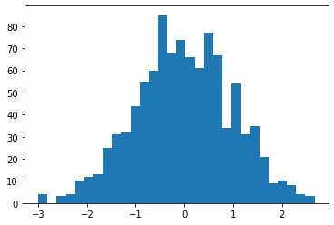
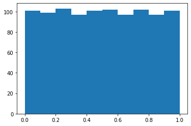

Monkey patched classes¶
See also: k1lib.patch()
-
class
torch.nn.modules.Module¶ -
Module.importParams(params: List[torch.nn.parameter.Parameter])¶ Given a list of
torch.nn.parameter.Parameter/torch.Tensor, update the currenttorch.nn.Module’s parameters with it’
-
Module.exportParams() → List[torch.Tensor]¶ Gets the list of
torch.Tensordata
-
Module.paramsContext() → AbstractContextManager¶ A nice context manager for
importParams()andexportParams(). Returns the old parameters on enter context.
-
Module.getParamsVector() → List[torch.Tensor]¶ For each parameter, returns a normal distributed random tensor with the same standard deviation as the original parameter
-
Module.preserveDevice() → AbstractContextManager¶ Preserves the device of whatever operation is inside this. Example:
import torch.nn as nn m = nn.Linear(3, 4) with m.preserveDevice(): m.cuda() # moves whole model to cuda # automatically moves model to cpu
This will work even if the model has many tensors that live on 10 different devices.
-
-
class
torch.Tensor¶ -
Tensor.crissCross() → torch.Tensor¶ Concats multiple 1d tensors, sorts it, and get evenly-spaced values. Also available as
torch.crissCross(). Example:a = torch.tensor([2, 2, 3, 6]) b = torch.tensor([4, 8, 10, 12, 18, 20, 30, 35]) # returns tensor([2, 3, 6, 10, 18, 30]) a.crissCross(b) # returns tensor([ 2, 4, 8, 10, 18, 20, 30, 35]) a.crissCross(*([b]*10)) # 1 "a" and 10 "b"s # returns tensor([ 2, 2, 3, 6, 18]) b.crissCross(*([a]*10)) # 1 "b" and 10 "a"s
Note how in the second case, the length is the same as tensor b, and the contents are pretty close to b. In the third case, it’s the opposite. Length is almost the same as tensor a, and the contents are also pretty close to a.
-
Tensor.histBounds(bins=100) → torch.Tensor¶ Flattens and sorts the tensor, then get value of tensor at regular linspace intervals. Does not guarantee bounds’ uniqueness. Example:
# Tensor with lots of 2s and 5s a = torch.Tensor([2]*5 + [3]*3 + [4] + [5]*4) # returns torch.tensor([2., 3., 5.]) a.histBounds(3).unique()
The example result essentially shows 3 bins: \([2, 3)\), \([3, 5)\) and \([5, \infty)\). This might be useful in scaling pixels so that networks handle it nicely. Rough idea taken from fastai.medical.imaging.
-
Tensor.histScaled(bins=100, bounds=None) → torch.Tensor¶ Scale tensor’s values so that the values are roughly spreaded out in range \([0, 1]\) to ease neural networks’ pain. Rough idea taken from fastai.medical.imaging. Example:
# normal-distributed values a = torch.randn(1000) # plot #1 shows a normal distribution plt.hist(a.numpy(), bins=30); plt.show() # plot #2 shows almost-uniform distribution plt.hist(a.histScaled().numpy()); plt.show()
Plot #1:
Plot #2:
- Parameters
bins – if
boundsnot specified, then will scale according to a hist with this many binsbounds – if specified, then
binsis ignored and will scale according to this. Expected this to be a sorted tensor going frommin(self)tomax(self).
-